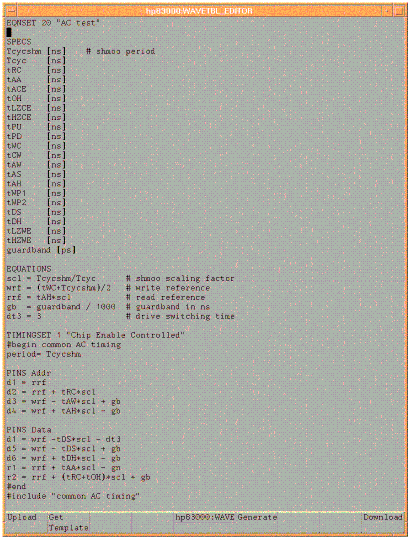
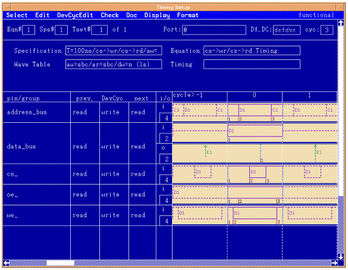

Setting up the timing
With the knowledge from the previous sections on how the timing system of the V93000 test system functions, the timing setups for the memory device can be defined. This section reviews how to set up the timing using the Equation Based Timing (EBT) definition system.

